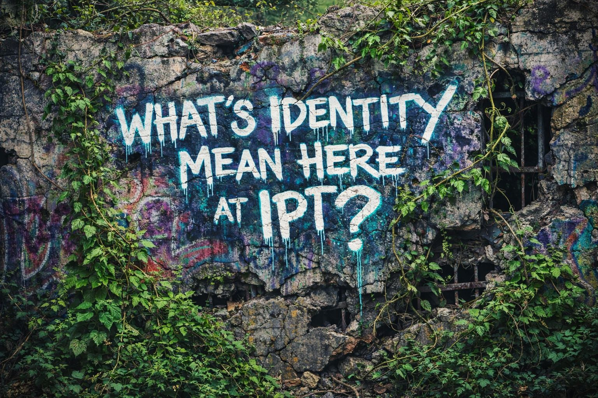

“Not a fixed thing. A continuity engine under pressure.”
Let’s go beneath the costumes.
Beneath the usernames.
Beneath the small courtroom of opinions in the skull.
Identity is often treated like a single object.
It isn’t.
It behaves more like:
At its most stripped-down level:
👉 Identity is the pattern by which a being experiences itself as itself
It answers:
Identity is not just labeling.
It is a stabilizing system.
Without it:
There is no single core.
There are layers:
⚠️ Conflict arises when these layers disagree.
Identity is not fully discovered.
Identity is not fully constructed.
It is:
👉 a living negotiation
Formed through:
Identity connects:
past → present → future
It allows:
Without continuity:
Identity = thread across time
Identity forms through interaction:
🧠 A large portion of identity is reflected perception.
You become visible to yourself through others.
Identity is not just thought.
It is also:
A person may think:
“I’m safe.”
while the body says:
“This resembles threat.”
👉 Identity lives in the body, not just the story.
Humans organize identity through story roles:
These stabilize meaning.
But:
⚠️ they can also trap
👉 Sometimes the cage is narrative.
Identity protects coherence.
So when challenged:
👉 it reacts
Not as disagreement,
but as structural threat.
This leads to:
Not random.
👉 Protective behavior.
Identity is not fixed.
It shifts under:
👉 Identity is under constant revision.
Less statue.
More maintenance system.
Online identity becomes:
👉 Identity becomes public infrastructure, not private experience.
This creates:
Identity exists because:
A conscious being must remain coherent while aware of time, change, and mortality.
So the system creates:
👉 something stable enough to move through instability
Identity is not the problem.
Unseen identity mechanics are.
When identity is mistaken for absolute truth:
When identity is seen as system:
The Hellhound does not attack identity.
It observes:
It recognizes:
“This is not just belief.”
“This is structure under pressure.”
Identity is not a single thing you are.
It is the system that lets you remain recognizable to yourself while everything changes.
“you’re not reacting randomly”
“you’re protecting something underneath”